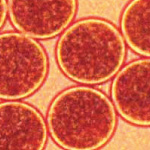
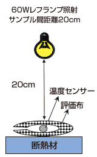
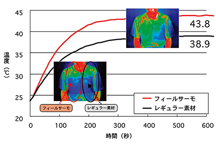

｢フレサーモ｣は赤外線を吸収・熱変換し、蓄熱する効果を促進する赤外線吸収蓄熱ポリエステルフィラメント素材です。
｢フレサーモ｣は複合紡糸技術と混練技術を駆使した芯鞘構造型フィラメントで、芯部に赤外線を吸収する特殊ポリマーを練り込んでいます。赤外線を吸収・熱変換して蓄熱する効果を促進することによって衣服内温度の上昇を促進する防寒機能素材です。
商品特長
●赤外線を吸収・熱変換して
衣服内温度の上昇を促進
●エニーカラー対応可能

■光吸収保温性試験とサーモセンサー結果


赤外線吸収による衣服内温度上昇(KBセーレン調べ)
※加工の条件、使用方法によっては性能に差が生じる場合がありますので、事前確認の上、ご使用ください。
展開用途
スポーツウェア・インナーウェア・寝装品・レギンス・ソックス・農業用ネットetc
お問い合わせ先
KBセーレン株式会社
原糸販売部
kbs.info@kb.seiren.com